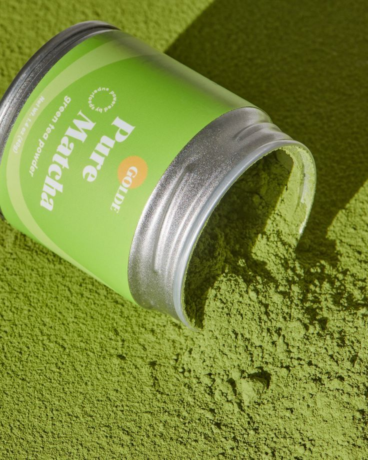

culinary matcha

Kemunculan "Culinary Grade" Matcha
Konsep "culinary grade" Matcha adalah perkembangan yang relatif modern dalam sejarah panjang teh Jepang. Ini muncul sebagai respons terhadap kebutuhan pasar dan inovasi kuliner, terutama pada paruh kedua abad ke-20 dan awal abad ke-21.
Untuk memenuhi beragam kebutuhan ini, produsen dan pemasok matcha mulai mengelompokkan matcha berdasarkan tujuannya. Jadi, "matcha kuliner" bukan berarti kualitasnya rendah. Sebaliknya, ini menandakan matcha tersebut sesuai khusus untuk performa terbaik dalam masakan, memastikan rasanya tetap kuat dan warnanya stabil saat menjadi bagian dari resep.
Matcha kuliner adalah bubuk teh hijau serbaguna yang dirancang khusus untuk memperkaya cita rasa dan tampilan hidangan serta minuman Anda. Berbeda dengan matcha ceremonial yang diminum langsung, matcha kuliner memiliki rasa lebih pekat, pahit, dan warna hijau yang solid, menjadikannya pilihan ideal untuk aplikasi kuliner.
Manfaat utamanya datang dari kandungan antioksidan yang sangat tinggi, terutama Epigallocatechin Gallate (EGCG), yang efektif melawan radikal bebas dan melindungi sel-sel tubuh dari kerusakan, sehingga berpotensi mencegah berbagai penyakit kronis. Uniknya, kombinasi antara kafein dan asam amino L-Theanine dalam matcha memberikan dorongan energi yang stabil dan meningkatkan fokus serta konsentrasi, tanpa efek "gelisah" atau penurunan energi mendadak seperti yang sering diasosiasikan dengan kopi.
premium matcha

Ini adalah bubuk teh hijau yang terbuat dari daun teh Camellia Sinensis yang ditanam secara khusus dan diproses dengan hati-hati. Ciri utamanya adalah tanpa tambahan bahan lain (gula, susu, perisa) atau pewarna buatan.
Premium matcha menawarkan kualitas unggul berkat pemanenan daun teh yang lebih awal dari seleksi. Proses ini meningkatkan konsentrasi L-Theanine, zat yang dikenal menenangkan dan meningkatkan fokus, serta antioksidan kuat seperti EGCG. Hasilnya, premium matcha memiliki rasa yang lebih halus dan seimbang, didominasi oleh umami dengan kepahitan minimal, ideal untuk dinikmati langsung atau dicampur dengan susu tanpa tambahan pemanis berlebihan. Selain itu, kualitas visual dan teksturnya juga superior: tampak dari warna hijau cerah dan bubuk yang sangat halus, menunjukkan kandungan klorofil yang lebih tinggi, yang bermanfaat untuk detoksifikasi.
Kebiasaan mengonsumsi teh bubuk dimulai di Tiongkok pada masa Dinasti Tang (abad ke-7 hingga ke-10). Para biksu Buddha Zen di Tiongkok menggunakan teh bubuk ini sebagai minuman untuk membantu mereka tetap terjaga dan fokus selama meditasi panjang. Daun teh digiling menjadi bubuk dan kemudian diseduh dengan air panas. Praktik ini kemudian menjadi populer di kalangan bangsawan dan cendekiawan.
ceremonial matcha

Ini adalah kualitas tertinggi dari matcha. Dibuat dari pucuk daun teh termuda dan daun pertama (first flush) yang ditanam di bawah naungan. Rasanya sangat halus, manis alami, umami yang kaya, dan memiliki warna hijau cerah. Ideal untuk diminum langsung dengan air panas.
Ceremonial matcha memberikan pengalaman sensorik yang superior. Rasa umami-nya yang dalam dan aroma yang lembut menciptakan momen refleksif dan ketenangan, didukung tekstur sangat halus yang menghasilkan buih creamy saat diseduh. Ini menjadikannya pilihan ideal bagi yang menginginkan manfaat kesehatan optimal sekaligus pengalaman minum teh yang autentik dan meditatif.
pada abad ke-12, ketika seorang biksu Buddha Zen Jepang bernama Eisai (pendiri sekte Rinzai Zen) kembali dari Tiongkok dengan membawa bibit teh dan metode pengolahan teh bubuk. Eisai membawa serta ajaran Zen dan menganggap teh bubuk ini sebagai alat penting untuk praktik meditasi dan kesehatan. Ia bahkan menulis buku berjudul Kissa Yojoki ("Cara Sehat Menuju Teh") yang mempromosikan manfaat kesehatan teh.
Awalnya, konsumsi matcha terbatas pada kalangan biksu dan bangsawan di Jepang karena proses produksinya yang masih rumit dan eksklusif.